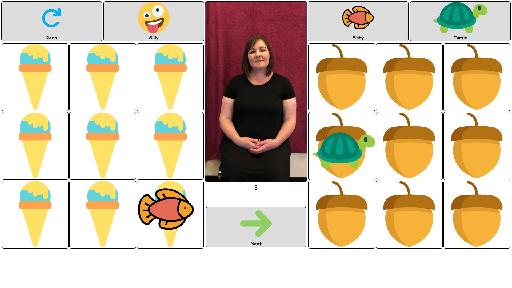

Champ Change

I am a student developer for Montana State's student success center.
Fishy Turtle
This is an app for a research project here on campus that I am the solo developer of.
UI UX Design

A example of my UX design skills.
Git Hub
Find the source code for this website and many other of my projects.
Champ Change

I am the senior developer for the Allen Yarnell Center for Student Success. I work on the ChampChange
website where students book SmartyCats tutoring appointments, Coaching and Advising appointments, and
participate in auctions & raffles with champions. There are also a lot of pages for AYCSS staff to
manage their appointments and hundreds of reports generated to make their lives easier.
Developing
on a 10+ year old LAMP stack has been a great opportunity to contribute to a large scale project
constantly building off the work of others and ensuring that my code is easily maintainable.
Being
a student developing user interfaces for students allows me to consistently get feedback from my pears
to inform my design decisions. Additionally, creating prototypes for the other developers in the office
to test and interact with is a great tool I frequently use when making major modifications or releasing
a new feature.
Fish Turtle

Building a childproof user interface capable of recording information for research has been an
incredibly difficult task. That said I have enjoyed creating an application for children with varying
communication skill levels.
This Project also allowed me to develop my understanding of full stack
Javascript apps as it was built with electron. Originally I was adapting the program form a legacy
application build in java swing, but it was incapable of being adjusted to the new requirements.
Building form the ground up gave me to opportunity to talk to the research heads and 'test' proctors,
the knowledge gained from speaking with them greatly impacted the design. I spent hours with a
whiteboard playing around with different layouts for the different stages to create the most intuitive
design, this allowed for rapid implication and testing. These factors enabled me to help streamline the
proctoring workflow and make it more accessible for young children.
UI UX Design
Recently for my UX class I created a prototype for a community driven boat ride-sharing app. The app is
designed to provide additional commuting options to people living on the outer island of Casco Bay.
Throughout the design process I learned a great deal about creating and evaluating UXs.
Beginning
with interviewing commuters to creating Empathy maps + Persons then constructing low and high fidelity
prototypes form them to finally testing my prototype on five more commuters.
From start to finish I
was abele to not only hone my UI/UX skills but also include various Usability Heuristics and UX
laws. Some of the more notable heuristics are Consistency standards for the apps icons and Flexibility
and efficiency by creating a streamlined filter system. For the laws I paid close attention to
are the Zeigarnik Effect by always showing users their upcoming rides and Tesler’s Law by only showing
basic ride information which can be expanded when tapped on.